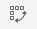
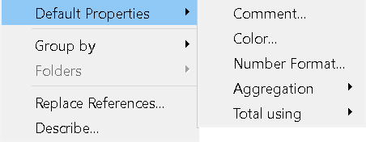

Try transforming the rock_n_roll_performers.csv dataset from wide to tall format using Tableau’s pivot feature.
| 1. | In the data grid, click to highlight the Year column. |
| 2. | Hold the Shift key, scroll to the right, and click to highlight the Artist Url column. |
| 3. | Click the ▼ caret on right side of the Artist Url column and select Pivot. |
| 4. | To undo the pivot, press Ctrl+Z (Windows) or Cmd+Z (Mac). |
 Exercise 2: Relate Datasets
Exercise 2: Relate Datasets
Let’s enhance the rock_n_roll_performers.csv dataset by relating it to rock_n_roll_studio_albums.csv using the Artist field as a common key.
| 1. |
In the Connections pane locate:
|
| 2. | Drag and drop the table onto the canvas. |
| 3. |
In the relationship settings, set the relationship as:
|
The more you use Tableau, the more you’ll notice there’s often more than one way to accomplish the same task!!!
 Exercise 3: Change measure to dimension
Exercise 3: Change measure to dimension
Drag the Index field above the gray line to categorize Index as a dimension.
Choose an effective visual
The Financial Times Visual Vocabulary offers a categorized collection of chart types. It is a useful reference for selecting the right chart for the needs and expectations of your audience.

Always give your worksheets clear, meaningful names. This makes it much easier to organize and navigate your dashboards or stories later on.
 Exercise 4: Bar Chart
Exercise 4: Bar Chart
| 1. |
Open a new worksheet
|
|
| 2. |
Rename the sheet
|
|
| 3. |
Build your bar chart
|
|
| 4. |
 |
Experiment with layout
|
| 5. |
Sort the bars
|
 Exercise 5: Bar Chart
Exercise 5: Bar Chart
| 1. |
Open a new worksheet and rename it:
|
| 2. |
Build the initial view.
|
| 3. |
Change the chart type.
|
 Exercise 6: Scatterplots
Exercise 6: Scatterplots
Create a scatterplot to compare the Peak US and Peak UK chart positions for albums released by your favorite artist inducted into the Rock and Roll Hall of Fame.
| 1. | Open a new worksheet and rename it: |
|
| 2. | Build the scatterplot: |
|
| 3. | Filter by artist: |
|
| 4. | Add detail: |
|
Outliers can significantly distort the results of a scatterplot, so it’s important to handle them thoughtfully. Tableau makes it easy to exclude outlier data points: simply click on a mark to open the tooptip and select 🛇 Exclude, or right-click the mark and choose X Exclude.
However, always be sure to document your approach for handling outliers. Transparency in your data-cleaning decisions is essential for maintaining the integrity and reproducibility of your analysis.
To save time and ensure consistency, try setting Default Properties for dimensions and measures before starting a Tableau project.

- Right-click on each measure that begins with “Peak”.
- Scroll to Default Properties, and select Number Format.
- Choose Number Standard from the formatting options.
This ensures that all selected measures display in a consistent numeric format throughout your workbook, reducing the need for repetitive formatting later on.